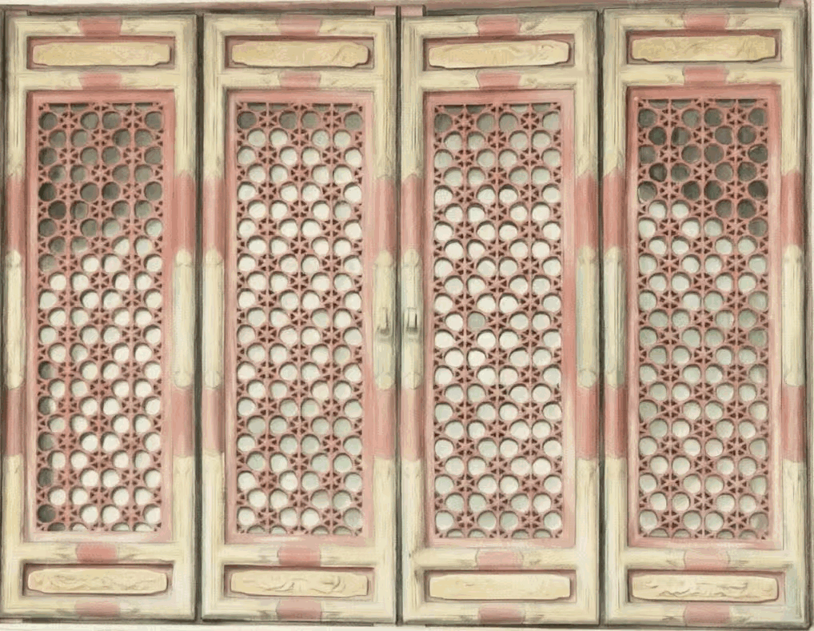
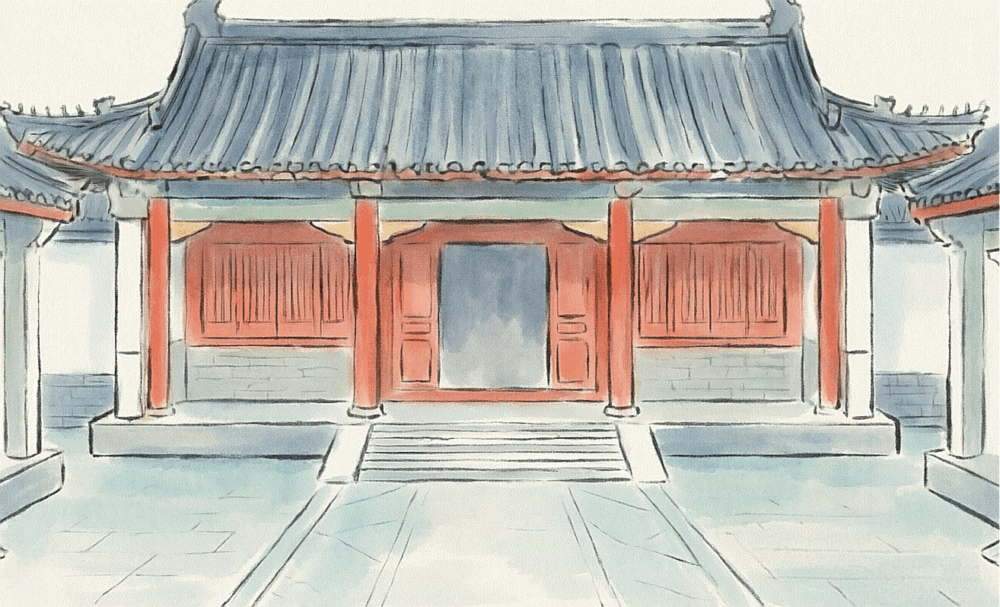
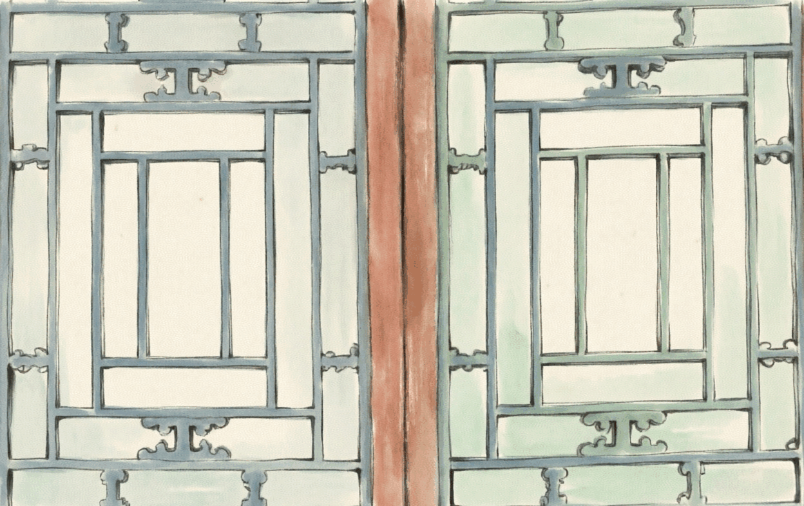
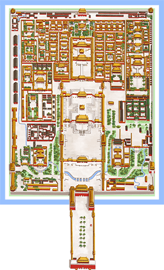
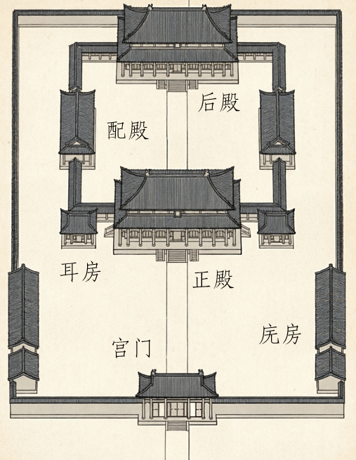
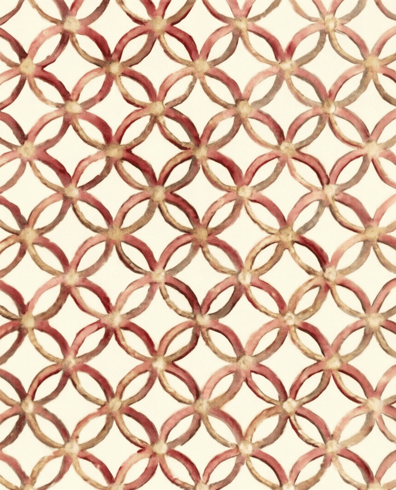
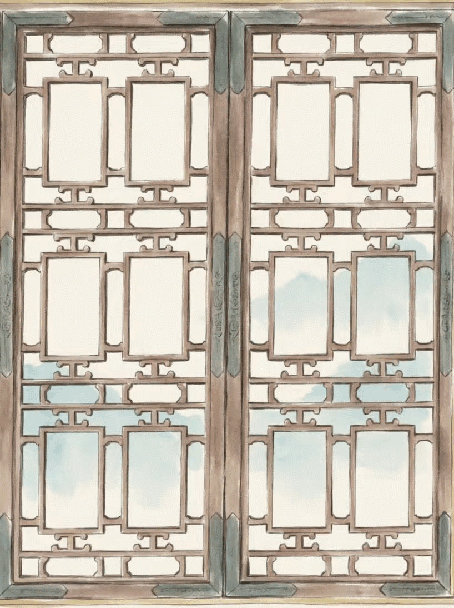
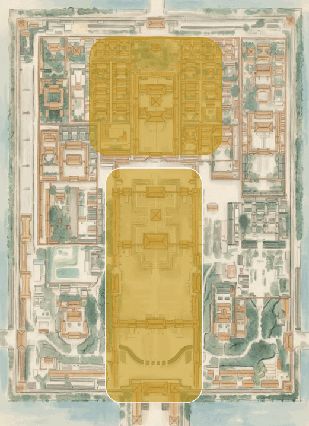
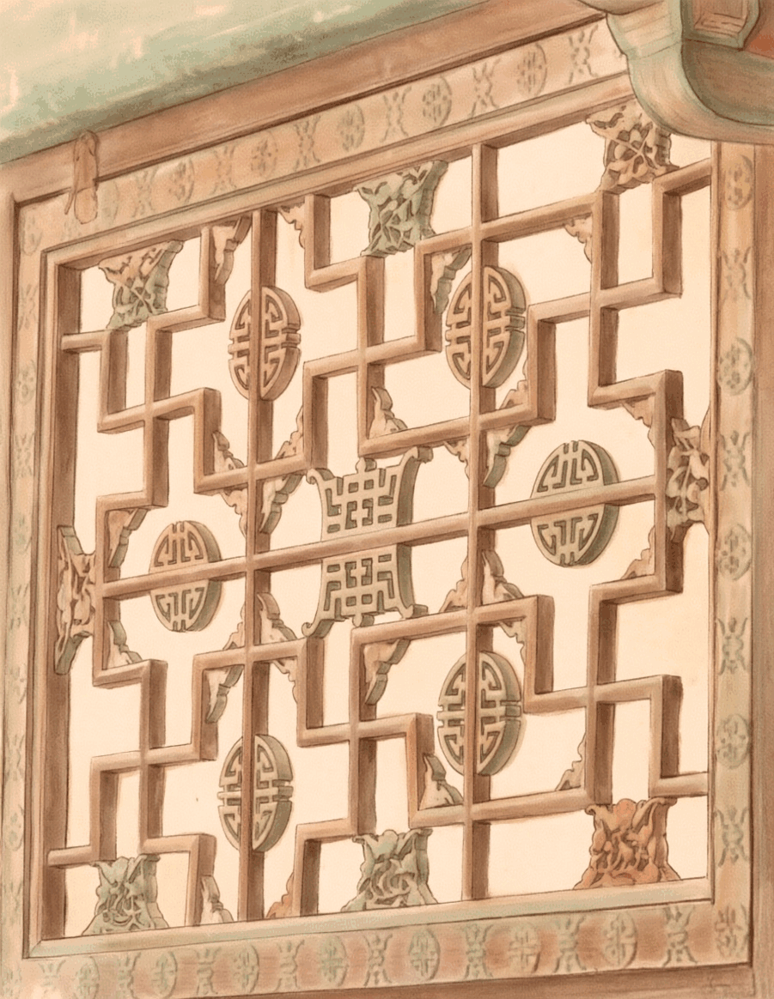
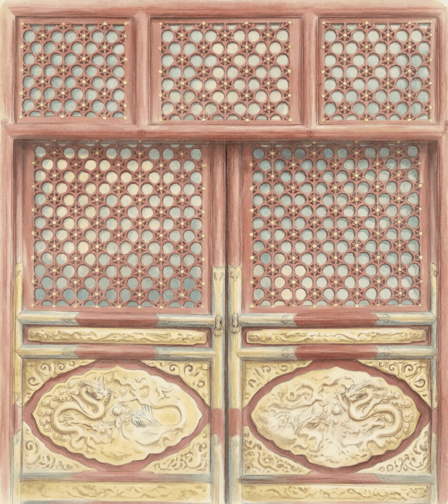

01
礼制等级
故宫窗棂与裙板纹样严格遵循清代皇家建筑等级规制，其形制、题材与建筑等级一一对应，是彰显宫廷礼制秩序的核心视觉符号。



北京故宫窗棂与裙板纹样分布数据可视化
下图以辐射状树图形式，展现裙板基础纹样衍生出各类变体的谱系脉络

故宫窗棂与裙板纹样严格遵循清代皇家建筑等级规制，其形制、题材与建筑等级一一对应，是彰显宫廷礼制秩序的核心视觉符号。



同一建筑内，不同功能的房屋匹配专属窗棂样式：正殿纹样繁复，彰显主人地位；庑房形制简约，注重实用朴素，窗棂设计精准适配建筑功能。



故宫窗棂在不同建筑的空间分布呈现鲜明的内外分区特征：外朝纹样多雄浑大气，凸显政务空间的皇权威仪，内廷纹样则多细腻私密，适配居住空间的生活需求。



patterns.csv · 13 条记录
未找到匹配记录